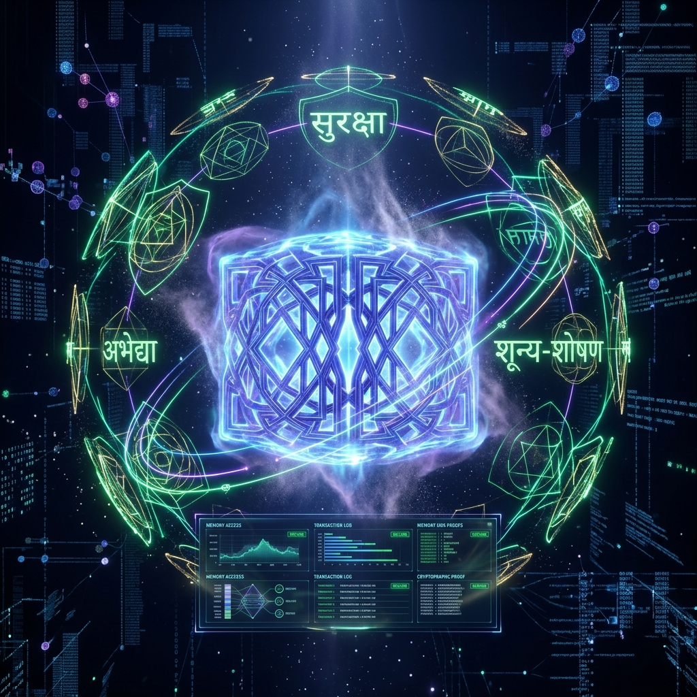

The world's first blockchain and smart contract language built entirely on Rishi Panini's ancient Sanskrit grammar. Impossible to hack. Infinite scalability.
Modern blockchains rely on flawed compilers like Solidity, leading to billions in stolen funds through memory leaks and Reentrancy attacks. KasturiChain fundamentally reinvents execution.
We replaced the LLVM backend with the Ashtadhyayi—Panini's flawless linguistic algorithm. Sanskrit isn't just an ancient language; it is the most rigorous, zero-ambiguity computational system ever discovered.

In the Sutra programming language, security is enforced at the linguistic compiler level using grammatical gender (Linga):
Variables ending in ā or ī (like koṣā - Vault) are cryptographically locked. They cannot be mutated by external functions. Reentrancy is mathematically impossible.
Variables ending in a act as dynamic actor pointers, freely mutating and executing logic.
KasturiChain is not merely a blockchain—it is the world's most authentic digital lighthouse for Sanatan Science. Explore the sovereign, censorship-resistant preservation of universal truths.
Discover the ancient algorithmic perfection of Maharishi Panini. See how Pratyaharas (प्रत्याहार) function as the ancient blueprint for modern Regex and Bitmasking.
# Kasturi Compiler Mapping:
let vriddhi_set = 0b101010; // Bitmask representation
Our consensus does not rely on western UNIX time. KasturiChain synchronizes globally using the precise movement of the 27 Nakshatras, aligning digital truth with cosmic reality.
Breaking free from the limitations of binary (0 and 1) logic, our Kasturi VM operates on the 4-dimensional non-dualistic Vedic logic framework. Watch the memory matrix shift between states.
जन्माद्यस्य यतोऽन्वयादितरतश्चार्थेष्वभिज्ञः स्वराट्
तेने ब्रह्म हृदा य आदिकवये मुह्यन्ति यत्सूरयः ।
तेजोवारिमृदां यथा विनिमयो यत्र त्रिसर्गोऽमृषा
धाम्ना स्वेन सदा निरस्तकुहकं सत्यं परं धीमहि ॥
janmādyasya yato'nvayāditarataścārtheṣvabhijñaḥ svarāṭ
tene brahma hṛdā ya ādikavaye muhyanti yatsūrayaḥ |
tejovārimṛdāṃ yathā vinimayo yatra trisargo'mṛṣā
dhāmnā svena sadā nirastakuhakaṃ satyaṃ paraṃ dhīmahi ||
KasturiChain is not built for human greed. It is built for Seva. By absolute, immutable mathematical consensus locked into the Genesis Block:
of all network transaction fees, NFT sales, and block rewards automatically flow into the Charity Treasury.
Direct funding for Goshalas across India.
Maintaining and restoring sacred temples and pilgrimage routes.
Providing Prasad and support for those in poverty.
Explore the supreme philosophical discourse. Completely decentralized and stored natively.
Enter the LibraryKasturiChain doesn't use massive GPU farms. We mine knowledge. Help us digitize the remaining 3,957 rules of Rishi Panini into JSON format, and earn $KST tokens natively on the network.
Open the ancient Sanskrit grammar rules.
Map the Sutra into the engine's data template.
Submit a Pull Request and get rewarded.